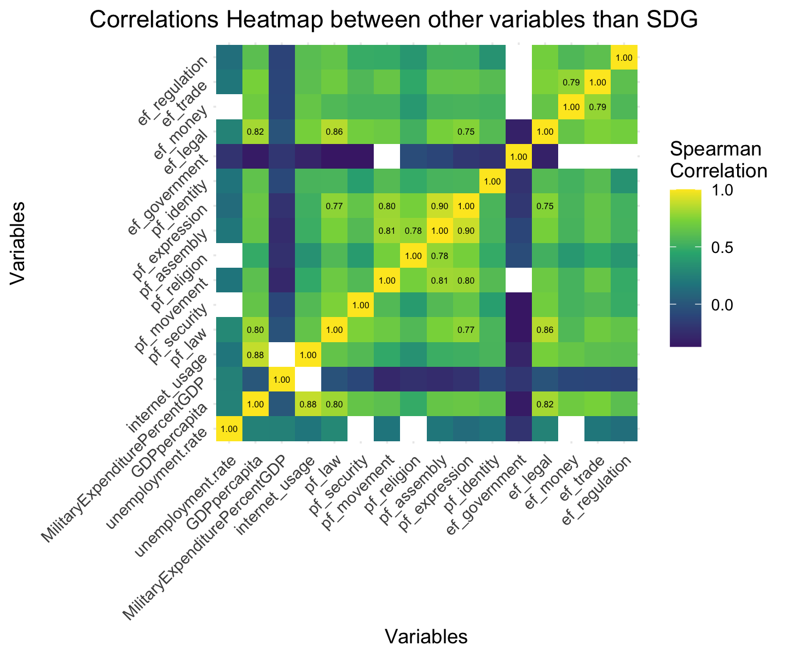
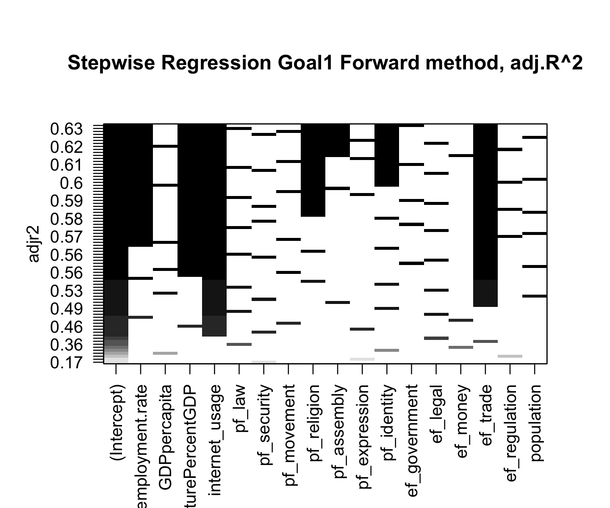
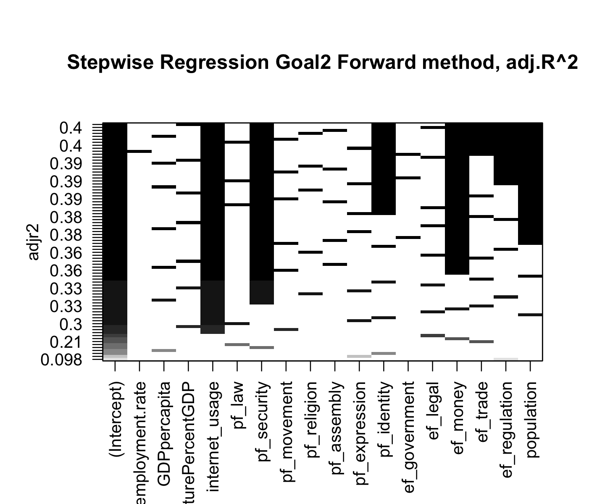
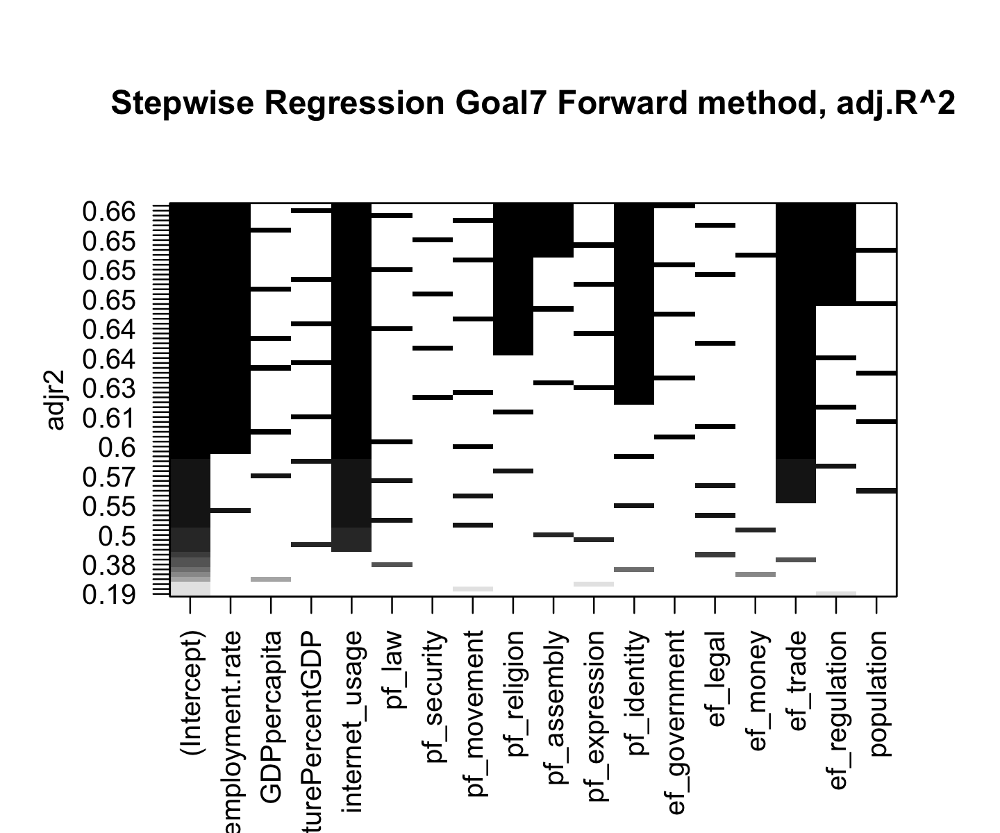
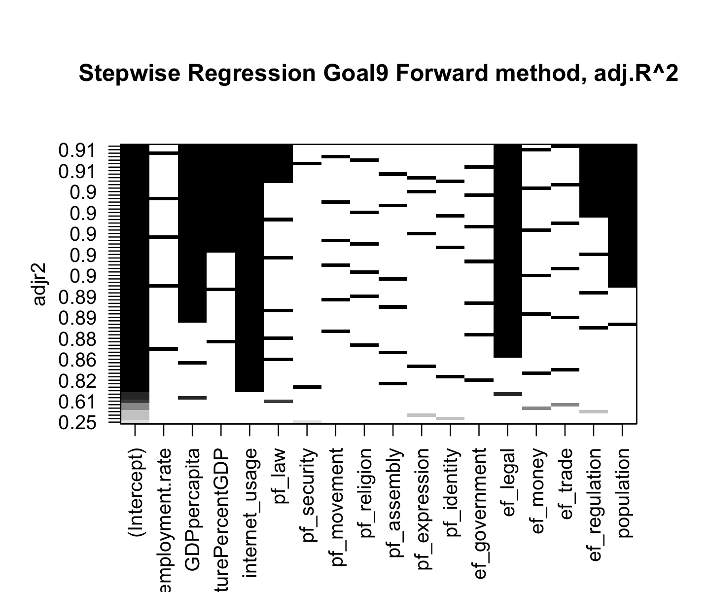

# Reshape the data from wide to long format for our sdg goals and our human freedom index scores
long_df_goal_distribution <- pivot_longer(Correlation_overall, cols = starts_with("goal"), names_to = "Goal", values_to = "Value")
long_df_goal_distribution$Goal <- with(long_df_goal_distribution, reorder(Goal, Value, FUN = mean))
long_df_hfi_distribution <- pivot_longer(Correlation_overall, cols = pf_law:ef_regulation, names_to = "Category", values_to = "Value")
long_df_hfi_distribution$Goal <- with(long_df_hfi_distribution, reorder(Category, Value, FUN = mean))
ggplot(long_df_goal_distribution, aes(x = Value, y = Goal, fill = stat(x))) +
geom_density_ridges_gradient(scale = 3, size = 0.3, rel_min_height = 0.01) +
scale_fill_viridis_c(name = "", option = "C") +
theme(plot.title = element_text(hjust = 0.5), # Center the title
plot.title.position = "plot") +
labs(x = 'Scores',
y = 'Goals',
title = 'SDG Goals Distribution')Focus on the influence of the factors over the SDG scores
EDA: general exploratory data analysis on factors influencing the sdg goals
For this first part of our EDA, let’s try to check first the distribution of the variables selected for answering our 1st question.
As we can see, most of our goals have a left-skewed distribution, which shows that for most of the country concerned implemented good strategies for targeting the goals objectives. Some distribution have a longer distribution than other, which could be a proof of inequality in the investments made for implementing solutions. In another hand, we notice that the only right-skewed distribution is concerning the observations of goal 9, which is promoting infrastructures, innovation and inclusive and sustainable industrialization. Again, that could show means inequalities. Wealthier countries are able to invest more on these sustainable development goals.
ggplot(long_df_hfi_distribution, aes(x = Value, y = Category, fill = stat(x))) +
geom_density_ridges_gradient(scale = 3, size = 0.3, rel_min_height = 0.01) +
scale_fill_viridis_c(name = "", option = "C") +
theme(plot.title = element_text(hjust = 0.5), # Center the title
plot.title.position = "plot") +
labs(x = 'Scores',
title = 'Human Freedom Index Scores Distribution')
The distribution of the Human Freedom Index Score follows the same trend. Most of the scores are left-skewed, which means that countries tend to have in general good scores. The only scores not folowing are pf_law and ef_legal, which tend to have lower scores in general. Legal system, for civilians and countries, is changing slowly because it has a lot of implications over the situation within a country/between countries and because of the divergence of opinions. Therefore, investing more money for raising these scores will take more time than raising the scores of other goals.
Now let’s consider the remaining variables of the dataset dedicated to answering the influence of factors over our SDG goals scores. All these variables have right-skewed distribution. Taking the mode into account, most of the concerned countries in our data have an unemployment rate between 2 to 7%, a distribution of GDP per capita between $3’000-$10’000, a distribution of military expenditure in percentage of the GDP 10% to 20% and finally a internet usage between 0 and 10%.
These variables shows us even more the inequalities between the countries in our dataset. While most of our countries have low internet usage or/and a low GDP per capita, few countries are more developed, then mostly wealthier, and thus having better chances to get higher scores.
#now, same for the remaining variables. No need to reshape our data as only one variable.
unempl_d <- ggplot(Correlation_overall, aes(x = unemployment.rate, y = 1, fill = stat(x))) +
geom_density_ridges_gradient(scale = 3, size = 0.3, rel_min_height = 0.01) +
scale_fill_viridis_c(name = "", option = "C") +
theme(plot.title = element_text(hjust = 0.5, size = 10), # Center the title
plot.title.position = "plot") +
labs(y = 'Density',
title = 'Distribution of Unemployment Rate')
gdp_d <- ggplot(Correlation_overall, aes(x = GDPpercapita, y = 1, fill = stat(x))) +
geom_density_ridges_gradient(scale = 3, size = 0.3, rel_min_height = 0.01) +
scale_fill_viridis_c(name = "", option = "C") +
theme(plot.title = element_text(hjust = 0.5, size = 10), # Center the title
plot.title.position = "plot") +
labs(y = 'Density', title = 'Distribution of GDP per Capita')
milit_d <- ggplot(Correlation_overall, aes(x = MilitaryExpenditurePercentGDP, y = 1, fill = stat(x))) +
geom_density_ridges_gradient(scale = 3, size = 0.3, rel_min_height = 0.01) +
scale_fill_viridis_c(name = "", option = "C") +
theme(plot.title = element_text(hjust = 0.5, size = 10), # Center the title
plot.title.position = "plot") +
labs(y = 'Density',title = 'Distribution of Military Expenditure (% of GDP)')
internet_d <- ggplot(Correlation_overall, aes(x = internet_usage, y = 1, fill = stat(x))) +
geom_density_ridges_gradient(scale = 3, size = 0.3, rel_min_height = 0.01) +
scale_fill_viridis_c(name = "", option = "C") +theme(plot.title = element_text(hjust = 0.5, size = 10),
plot.title.position = "plot") +
labs(y = 'Density',title = 'Distribution of Internet Usage')
grid.arrange(unempl_d,gdp_d,milit_d,internet_d, ncol = 2, nrow = 2)
# Define UI for application
ui <- dashboardPage(
dashboardHeader(title = "Interactive Plots"),
dashboardSidebar(
actionButton("switchPlot", "Switch to Next Plot")
),
dashboardBody(
plotOutput("distPlot")
)
)
# Define server logic
server <- function(input, output) {
# Reactive value to store which plot is currently active
currentPlot <- reactiveVal("goal")
observeEvent(input$switchPlot, {
# Cycle through the plots
currentPlot(switch(currentPlot(),
"goal" = "hfi",
"hfi" = "grid",
"grid" = "goal"))
})
# Render the appropriate plot
output$distPlot <- renderPlot({
if (currentPlot() == "goal") {
ggplot(long_df_goal_distribution, aes(x = Value, y = Goal, fill = stat(x))) +
geom_density_ridges_gradient(scale = 3, size = 0.3, rel_min_height = 0.01) +
scale_fill_viridis_c(name = "", option = "C") +
theme(plot.title = element_text(hjust = 0.5), plot.title.position = "plot") +
labs(x = 'Scores', y = 'Goals', title = 'SDG Goals Distribution')
} else if (currentPlot() == "hfi") {
ggplot(long_df_hfi_distribution, aes(x = Value, y = Category, fill = stat(x))) +
geom_density_ridges_gradient(scale = 3, size = 0.3, rel_min_height = 0.01) +
scale_fill_viridis_c(name = "", option = "C") +
theme(plot.title = element_text(hjust = 0.5), plot.title.position = "plot") +
labs(x = 'Scores', title = 'Human Freedom Index Scores Distribution')
} else {
# Replace unempl_d, gdp_d, milit_d, internet_d with your ggplot objects
grid.arrange(unempl_d, gdp_d, milit_d, internet_d, ncol = 2, nrow = 2)
}
})
}
# shinyApp(ui = ui, server = server)
Now, let’s display the distribution of the different SDG achievement scores per continent, using violin boxplots to have an overview of the mods, the range with most of the observations and the outliers.
#### boxplots ####
#For sdg goals per continent
#Africa
data_Q1_Africa <- data_question1 %>% #filtering Africa as continent
filter(data_question1$continent == 'Africa') %>%
dplyr::select(continent, overallscore, goal1, goal2, goal3, goal4, goal5, goal6, goal7, goal8, goal9, goal10, goal11, goal12, goal13, goal15, goal16, goal17)
data_Q1_Africa_long <- melt(data_Q1_Africa)
medians_AF <- data_Q1_Africa_long %>% #median per variable
group_by(variable) %>%
summarize(median_value = median(value))
data_Q1_Africa_long <- data_Q1_Africa_long %>%
left_join(medians_AF, by = "variable")
#America
data_Q1_Americas <- data_question1 %>%#filtering Americas as continent
filter(data_question1$continent == 'Americas') %>%
dplyr::select(continent, overallscore, goal1, goal2, goal3, goal4, goal5, goal6, goal7, goal8, goal9, goal10, goal11, goal12, goal13, goal15, goal16, goal17)
data_Q1_Americas_long <- melt(data_Q1_Americas)
medians_AM <- data_Q1_Americas_long %>% #median per variable
group_by(variable) %>%
summarize(median_value = median(value))
data_Q1_Americas_long <- data_Q1_Americas_long %>%
left_join(medians_AM, by = "variable")
#Asia
data_Q1_Asia <- data_question1 %>%
filter(data_question1$continent == 'Asia') %>%#filtering Asia as continent
dplyr::select(continent, overallscore, goal1, goal2, goal3, goal4, goal5, goal6, goal7, goal8, goal9, goal10, goal11, goal12, goal13, goal15, goal16, goal17)
data_Q1_Asia_long <- melt(data_Q1_Asia)
medians_AS <- data_Q1_Asia_long %>% #median per variable
group_by(variable) %>%
summarize(median_value = median(value))
data_Q1_Asia_long <- data_Q1_Asia_long %>%
left_join(medians_AS, by = "variable")
#Europe
data_Q1_Europe <- data_question1 %>%
filter(data_question1$continent == 'Europe') %>% #filtering Europe as continent
dplyr::select(continent, overallscore, goal1, goal2, goal3, goal4, goal5, goal6, goal7, goal8, goal9, goal10, goal11, goal12, goal13, goal15, goal16, goal17)
data_Q1_Europe_long <- melt(data_Q1_Europe)
medians_EU <- data_Q1_Europe_long %>% #median per variable
group_by(variable) %>%
summarize(median_value = median(value))
data_Q1_Europe_long <- data_Q1_Europe_long %>%
left_join(medians_EU, by = "variable")
#Oceania
data_Q1_Oceania <- data_question1 %>%
filter(data_question1$continent == 'Oceania') %>% #filtering Oceania as continent
dplyr::select(continent, overallscore, goal1, goal2, goal3, goal4, goal5, goal6, goal7, goal8, goal9, goal10, goal11, goal12, goal13, goal15, goal16, goal17)
data_Q1_Oceania_long <- melt(data_Q1_Oceania)
medians_OC <- data_Q1_Oceania_long %>% #median per variable
group_by(variable) %>%
summarize(median_value = median(value))
data_Q1_Oceania_long <- data_Q1_Oceania_long %>%
left_join(medians_OC, by = "variable")
# merge all medians
medians_all <- rbind(data_Q1_Oceania_long, data_Q1_Americas_long,data_Q1_Africa_long,data_Q1_Asia_long,data_Q1_Europe_long)
medians_all$color <- ifelse(medians_all$median_value > 75, "lightgreen",
ifelse(medians_all$median_value < 25, "red3", 'lightblue3')) #assigning colors. If median for a goal is > 75 -> lightblue, if < 25 -> red, orange otherwise.
bandwidth_nrd <- bw.nrd(medians_all$value) #adapting the bandwidth
ggplot(medians_all, aes(x = variable, y = value, fill = color)) +
geom_violin(trim = FALSE, bw = bandwidth_nrd) +
scale_fill_manual(values = c("lightgreen" = "lightgreen", "red3" = "red3", "lightblue3" = "lightblue3"),
labels = c("between", ">75", "<25")) +
labs(title = "SDG Goals Distribution by Continent", x = "Goals", y = "Scores", fill = "Score Category") +
facet_grid(continent ~ ., scales = "free_y") +
scale_y_continuous(labels = scales::label_number()) +
theme_classic() +
theme(plot.title = element_text(hjust = 0.5), # Center the title
plot.title.position = "plot", axis.text.x = element_text(angle = 90, vjust = 0.5, hjust=1))

Here is the distribution of the goals per continent. We notice that Europe the continent with most of its goals having a median superior to 75 (represented by the lightblue color. We notice that only two goals have a median score lower than 25, which is for goal 9 for Africa and goal 10 for America. As seen before, goal 9 is generally having lower scores than the other goals. That could mean that the access to technology and sustainable/resilient infrastructures/industrialization is harder in Africa, because of various reasons such as less wealthy countries, corruption,…
The goal 10 concerns the reduction of inequalities within/amongst countries. Therefore, we presume that less effort and investment has been made on this goal in America.
In addition, some distributions are quite disparsed, such as goal 13 in Oceania and goal 10 in Africa. That could again show inequalities within countries or less investment made to raise the scores by different countries of the same continent.
Now let’s display boxplots for the different variables of the human freedom index.
#for Human Freedom Index scores
#Africa
data_Q1_Africa_HFI <- data_question1 %>%
filter(data_question1$continent == 'Africa') %>%
dplyr::select(continent, pf_law, pf_security, pf_movement, pf_religion, pf_assembly, pf_expression, pf_identity, ef_government, ef_legal, ef_money, ef_trade, ef_regulation)
data_Q1_Africa_HFI_long <- melt(data_Q1_Africa_HFI)
medians_AF_HFI <- data_Q1_Africa_HFI_long %>%
group_by(variable) %>%
summarize(median_value = median(value))
data_Q1_Africa_HFI_long <- data_Q1_Africa_HFI_long %>%
left_join(medians_AF_HFI, by = "variable")
#America
data_Q1_Americas_HFI <- data_question1 %>%
filter(data_question1$continent == 'Americas') %>%
dplyr::select(continent, pf_law, pf_security, pf_movement, pf_religion, pf_assembly, pf_expression, pf_identity, ef_government, ef_legal, ef_money, ef_trade, ef_regulation)
data_Q1_Americas_HFI_long <- melt(data_Q1_Americas_HFI)
medians_AM_HFI <- data_Q1_Americas_HFI_long %>%
group_by(variable) %>%
summarize(median_value = median(value))
data_Q1_Americas_HFI_long <- data_Q1_Americas_HFI_long %>%
left_join(medians_AM_HFI, by = "variable")
#Asia
data_Q1_Asia_HFI <- data_question1 %>%
filter(data_question1$continent == 'Asia') %>%
dplyr::select(continent, pf_law, pf_security, pf_movement, pf_religion, pf_assembly, pf_expression, pf_identity, ef_government, ef_legal, ef_money, ef_trade, ef_regulation)
data_Q1_Asia_HFI_long <- melt(data_Q1_Asia_HFI)
medians_AS_HFI <- data_Q1_Asia_HFI_long %>%
group_by(variable) %>%
summarize(median_value = median(value))
data_Q1_Asia_HFI_long <- data_Q1_Asia_HFI_long %>%
left_join(medians_AS_HFI, by = "variable")
#Europe
data_Q1_Europe_HFI <- data_question1 %>%
filter(data_question1$continent == 'Europe') %>%
dplyr::select(continent, pf_law, pf_security, pf_movement, pf_religion, pf_assembly, pf_expression, pf_identity, ef_government, ef_legal, ef_money, ef_trade, ef_regulation)
data_Q1_Europe_HFI_long <- melt(data_Q1_Europe_HFI)
medians_EU_HFI <- data_Q1_Europe_HFI_long %>%
group_by(variable) %>%
summarize(median_value = median(value))
data_Q1_Europe_HFI_long <- data_Q1_Europe_HFI_long %>%
left_join(medians_EU_HFI, by = "variable")
#Oceania
data_Q1_Oceania_HFI <- data_question1 %>%
filter(data_question1$continent == 'Oceania') %>%
dplyr::select(continent, pf_law, pf_security, pf_movement, pf_religion, pf_assembly, pf_expression, pf_identity, ef_government, ef_legal, ef_money, ef_trade, ef_regulation)
data_Q1_Oceania_HFI_long <- melt(data_Q1_Oceania_HFI)
medians_OC_HFI <- data_Q1_Oceania_HFI_long %>%
group_by(variable) %>%
summarize(median_value = median(value))
data_Q1_Oceania_HFI_long <- data_Q1_Oceania_HFI_long %>%
left_join(medians_OC_HFI, by = "variable")
# merge all medians
medians_all_HFI <- rbind(data_Q1_Oceania_HFI_long, data_Q1_Americas_HFI_long,data_Q1_Africa_HFI_long,data_Q1_Asia_HFI_long,data_Q1_Europe_HFI_long)
medians_all_HFI$color <- ifelse(medians_all_HFI$median_value > 7.5, "lightgreen",
ifelse(medians_all_HFI$median_value < 2.5, "red3", 'lightblue3'))
bandwidth_nrd_HFI <- bw.nrd(medians_all_HFI$value)
# Create the plot
ggplot(medians_all_HFI, aes(x = variable, y = value, fill = color)) +
geom_violin(trim = FALSE, bw = bandwidth_nrd_HFI) +
scale_fill_manual(values = c("lightgreen" = "lightgreen", "red3" = "red3", "lightblue3" = "lightblue3"),
labels = c("between", ">7.5", "<2.5")) +
labs(title = "Human Freedom Index Scores Distribution by Continent", x = "Variables", y = "Scores", fill = "Score Category") +
facet_grid(continent ~ ., scales = "free_y") +
scale_y_continuous(labels = scales::label_number()) +
theme_classic() +
theme(plot.title = element_text(hjust = 0.5), # Center the title
plot.title.position = "plot", axis.text.x = element_text(angle = 90, vjust = 0.5, hjust=1))
Here we can notice the same results as before concerning the SDG goals, except that no score has a median below 25%. Again, Europe is the continent with most of its median scores superior to 75 (lightblue color)
For space reason because of the different scales, we have decided not to make violin boxplot per continent for the remaining variables. The distribution can be seen in the general distribution seen prior to that.
Now, let’s have a closer look to the general correlation between our variables. Using our cleaned dataset, we will use a correlation heatmap to help us vizualising the informations. Given that most of our variables are not normally distributed, we will use the Spearman method to calculate the correlation.
#### Correlations between variables Heatmap ####
Correlation_overall <-data_question1 %>% # selection of the numerical data
dplyr::select(population:ef_regulation)
cor_matrix_sper <- # calculation of the correlation matrix
cor(Correlation_overall, method = "spearman", use = "everything")
cor_melted <- # wide to long transformation
melt(cor_matrix_sper)
ggplot(data = cor_melted, aes(Var1, Var2, fill = value)) +
geom_tile() +
scale_fill_gradient2(low = "blue", high = "red", mid = "white",
midpoint = 0, limit = c(-1, 1), space = "Lab",
name="Spearman\nCorrelation") +
theme_minimal() +
theme(axis.text.x = element_text(angle = 45, vjust = 1, size = 6, hjust = 1),
axis.text.y = element_text(size = 6),
plot.title = element_text(hjust = 0.5)) +
coord_fixed() +
labs(x = '', y = '', title = 'Correlation Matrix Heatmap')
By looking at our heatmap, we notice that most of our goals are strongely correlated together and that some variables amongst the Human Freedom Index scores too (strong correlation among personal freedom variables (pf), reflecting scores from the Human Freedom Index on movement, religion, assembly, and expression). This could be explained by the fact that some of these goals/scores share partially similar objectifs, which could mean that a raise in the score of one of these goals will raise positively the score of another/some other goals. In addition, we notice that goals 12 and 13 (respectively “responsible consumption & production” and “climate action”) are strongely negatively correlated with most of our variables, except between themself.
We will see more in detail the correlations between our goals and variables in the analysis part of the influence of the factors over the Sustainable Development Goals.
In order to have an overview of the relationship between our independent variables and the SDG overall score, we make several graphs containing the Spearman correlation coefficient between the variable, the scatter plots describing the relationship between the variables, as well as the distribution of each variable. –>
#### Spearman's correlation coeff ####
lower.panel <- function(x, y, ...){
points(x, y, pch = 20, col = "darkgreen", cex = 0.2)
}
panel.hist <- function(x, ...){
usr <- par("usr"); on.exit(par(usr))
par(usr = c(usr[1:2], 0, 1.5) )
h <- hist(x, plot = FALSE)
breaks <- h$breaks; nB <- length(breaks)
y <- h$counts; y <- y/max(y)
rect(breaks[-nB], 0, breaks[-1], y, col = "lightgreen", ...)
}
# panel.cor_stars function with stars alongside correlation coefficients
panel.cor_stars <- function(x, y, digits = 2, prefix = "", cex.cor, ...) {
usr <- par("usr"); on.exit(par(usr))
par(usr = c(0, 1, 0, 1))
r <- cor(x, y)
p_value <- cor.test (x,y)$p.value
if (p_value < 0.001){
stars <- "***"
} else if (p_value < 0.01) {
stars <- "**"
} else if (p_value < 0.05) {
stars <- "*"
} else {
stars <- ""
}
txt <- paste0(format(c(r, 0.123456789), digits = digits)[1], " ", stars)
if(missing(cex.cor)) cex.cor <- 0.5/strwidth(txt)
text(0.5, 0.5, txt, cex = cex.cor)
}
# # Independent variables
pairs(Correlation_overall[,c("overallscore", "unemployment.rate", "GDPpercapita", "MilitaryExpenditurePercentGDP", "internet_usage")], upper.panel=panel.cor_stars, diag.panel=panel.hist, lower.panel = lower.panel, main="Correlation table and distribution of various variables")
# pairs(Correlation_overall[,c("overallscore", "pf_law", "pf_security", "pf_movement", "pf_religion", "pf_assembly" ,"pf_expression" ,"pf_identity", "ef_government", "ef_legal", "ef_money", "ef_trade", "ef_regulation")], upper.panel=panel.cor_stars, diag.panel=panel.hist, lower.panel = lower.panel, main="Correlation table and distribution of HFI variables")
Meaning of the stars: *** : p_value < 0.001; ** : p_value < 0.01; *: p_value <0.05; no star if p_value is higher.
The overall SDG achievement score is highly correlated with the percentage of people using the internet (r=.79) and GDP per capita (r=.60). The unemployement rate as well as the military expenditures in percentage of GDP per capita do not seem to play a role. However, this is only for the overall score.
The overall SDG achievement score is highly correlated with “personal freedom: law” (p=.69) and “personal freedom: identity” (p=.62). The other dimensions of personal freedom do not seem to have important influence. Regarding the distribution of the personal freedom variables, we notice that except for law, all have right-skewed distributions meaning that most of the countries have high scores.
The overall SDG achievement score is highly correlated with “economical freedom: legal” (p=.77), “economical trade: legal” (p=.67) and “economical freedom: money” (p=.6), while the other dimensions of economic freedom do not seem to have important influence. Regarding the distribution of the economic freedom variables, we notice more heterogeneous distributions and scores across the various countries than for personal freedom.
Analysis: analysis of the Influence of the factors over the Sustainable Development Goals
In order to answer the first question of our work, let’s start by zooming on the correlation matrix heatmap made in our EDA part. Here are the correlations between the SDG goals and all the other variables except the SDG goals.
### Correlation Matrix Heatmap SDG/Other variables ###
#computing pvals of our interested variables
corr_matrix <- cor(data_question1[7:40], method = "spearman", use = "everything")
p_matrix2 <- matrix(nrow = ncol(data_question1[7:40]), ncol = ncol(data_question1[7:40]))
for (i in 1:ncol(data_question1[7:40])) {
for (j in 1:ncol(data_question1[7:40])) {
test_result <- cor.test(data_question1[7:40][, i], data_question1[7:40][, j])
p_matrix2[i, j] <- test_result$p.value
}
}
corr_matrix[which(p_matrix2 > 0.05)] <- NA #only keeping significant pval alpha = 0.05
melted_corr_matrix_GVar <- melt(corr_matrix[19:34,1:18])
ggplot(melted_corr_matrix_GVar, aes(Var1, Var2, fill = value)) +
geom_tile() +
geom_text(aes(label = ifelse(!is.na(value) & abs(value) > 0.75, sprintf("%.2f", value), '')),
color = "black", size = 2) +
scale_fill_gradient2(low = "blue", high = "red", mid = "white",
midpoint = 0, limit = c(-1, 1), space = "Lab",
name = "Spearman\nCorrelation") +
theme_minimal() +
theme(axis.text.x = element_text(angle = 45, hjust = 1),
axis.text.y = element_text(angle = 45, hjust = 1)) +
labs(x = 'Goals', y = 'Goals',
title = 'Correlations Heatmap between goals and our other variables')
The numbers are representing the significant pval between our variables. The grey parts are the non significant pvals.
GDP per capita, internet_usage, pf_law or ef_legal are strongely correlated with most of our SDG goals. This is mostly due to the large scope englobed in these variables. That makes them influence various sectors of our economies and thus, mostly impacting all our SDG goals. Therefore, we can think that these variables have a strong impact on the scores. Nevertheless, as correlation doesn’t mean causality, we cannot jump to conclusions.
As we can see, our SDG goals 12 & 13 (responsible consumption & production and climate action) are negatively correlated with most of our variables, as is the economic freedom government variable to our SDG goals. Nevertheless, goals 12 & 13 and ef_government are positively correlated together.
Now let’s zoom on the correlations between all our variables except the SDG goals:
melted_corr_matrix_Var <- melt(corr_matrix[19:34,19:34])
ggplot(melted_corr_matrix_Var, aes(Var1, Var2, fill = value)) +
geom_tile() +
geom_text(aes(label = ifelse(!is.na(value) & abs(value) > 0.75, sprintf("%.2f", value), '')),
color = "black", size = 1.7) +
scale_fill_gradient2(low = "blue", high = "red", mid = "white",
midpoint = 0, limit = c(-1, 1), space = "Lab",
name = "Spearman\nCorrelation") +
theme_minimal() +
theme(axis.text.x = element_text(angle = 45, hjust = 1),
axis.text.y = element_text(angle = 45, hjust = 1)) +
labs(x = 'Goals', y = 'Goals',
title = 'Correlations Heatmap between other variables than SDG goals')
As noticed earlier, there is a strong correlation among personal freedom variables (pf), reflecting scores from the Human Freedom Index on movement, religion, assembly, and expression.
Again, we can see that GDP per capita, pf_law, ef_legal are highly correlated with some other variables. On another hand, we notice that pf_movement, pf_assembly, pf_expression are now also higly correlated with some of the other variables.
In order to have a look at the influence of some factors over our dependent variables, let’s conduct a Principal Component Analysis over the Human Freedom Index Scores.
#### PCA and PCA Scree plot####
myPCA_s <- PCA(data_question1[,29:40], graph = FALSE)
fviz_eig(myPCA_s,
addlabels = TRUE) +
theme_minimal()
summary(myPCA_s)
#>
#> Call:
#> PCA(X = data_question1[, 29:40], graph = FALSE)
#>
#>
#> Eigenvalues
#> Dim.1 Dim.2 Dim.3 Dim.4 Dim.5 Dim.6
#> Variance 6.710 1.577 1.014 0.731 0.507 0.419
#> % of var. 55.915 13.140 8.453 6.093 4.222 3.491
#> Cumulative % of var. 55.915 69.055 77.507 83.601 87.823 91.314
#> Dim.7 Dim.8 Dim.9 Dim.10 Dim.11 Dim.12
#> Variance 0.287 0.218 0.192 0.168 0.106 0.070
#> % of var. 2.395 1.820 1.602 1.402 0.882 0.585
#> Cumulative % of var. 93.710 95.530 97.132 98.533 99.415 100.000
#>
#> Individuals (the 10 first)
#> Dist Dim.1 ctr cos2 Dim.2 ctr cos2
#> 1 | 2.143 | -0.207 0.000 0.009 | 1.261 0.045 0.346
#> 2 | 2.085 | -0.135 0.000 0.004 | 1.325 0.050 0.404
#> 3 | 2.413 | 0.027 0.000 0.000 | 1.656 0.078 0.471
#> 4 | 2.529 | 0.530 0.002 0.044 | 1.430 0.058 0.320
#> 5 | 2.416 | 0.364 0.001 0.023 | 1.272 0.046 0.277
#> 6 | 2.277 | 0.378 0.001 0.028 | 1.146 0.037 0.253
#> 7 | 2.320 | 0.613 0.003 0.070 | 1.196 0.041 0.266
#> 8 | 2.605 | 0.726 0.004 0.078 | 1.614 0.074 0.384
#> 9 | 2.335 | 0.850 0.005 0.132 | 1.287 0.047 0.304
#> 10 | 2.183 | 0.909 0.006 0.173 | 0.982 0.027 0.202
#> Dim.3 ctr cos2
#> 1 | -0.542 0.013 0.064 |
#> 2 | -0.253 0.003 0.015 |
#> 3 | 0.176 0.001 0.005 |
#> 4 | 0.990 0.043 0.153 |
#> 5 | 0.579 0.015 0.057 |
#> 6 | 0.341 0.005 0.022 |
#> 7 | 0.494 0.011 0.045 |
#> 8 | 0.411 0.007 0.025 |
#> 9 | 0.292 0.004 0.016 |
#> 10 | 0.214 0.002 0.010 |
#>
#> Variables (the 10 first)
#> Dim.1 ctr cos2 Dim.2 ctr cos2 Dim.3
#> pf_law | 0.871 11.310 0.759 | -0.301 5.732 0.090 | -0.110
#> pf_security | 0.578 4.984 0.334 | -0.446 12.630 0.199 | -0.208
#> pf_movement | 0.837 10.432 0.700 | 0.282 5.028 0.079 | -0.148
#> pf_religion | 0.704 7.392 0.496 | 0.537 18.285 0.288 | -0.299
#> pf_assembly | 0.839 10.482 0.703 | 0.404 10.343 0.163 | -0.206
#> pf_expression | 0.890 11.814 0.793 | 0.171 1.855 0.029 | -0.241
#> pf_identity | 0.668 6.650 0.446 | -0.007 0.003 0.000 | 0.034
#> ef_government | -0.154 0.354 0.024 | 0.779 38.445 0.606 | 0.435
#> ef_legal | 0.871 11.314 0.759 | -0.302 5.791 0.091 | 0.052
#> ef_money | 0.690 7.104 0.477 | -0.128 1.047 0.017 | 0.544
#> ctr cos2
#> pf_law 1.189 0.012 |
#> pf_security 4.245 0.043 |
#> pf_movement 2.164 0.022 |
#> pf_religion 8.814 0.089 |
#> pf_assembly 4.167 0.042 |
#> pf_expression 5.703 0.058 |
#> pf_identity 0.113 0.001 |
#> ef_government 18.631 0.189 |
#> ef_legal 0.262 0.003 |
#> ef_money 29.130 0.295 |
#### PCA Biplot ####
fviz_pca_biplot(myPCA_s,
label="var",
col.var="dodgerblue3",
geom="point",
pointsize = 0.1,
labelsize = 5) +
theme_minimal()
Now concerning the Human Freedom Index scores, most of the variables are positively correlated to the dimension 1, slightly less for the PF religion, and finally the EF government variable is slighlty incorrelated to the dimension 1. With a eigenvalue bigger than 1 for the three first components, we conclude that there are 3 dimensions to take into account. Nevertheless, again, they are explaining less than 80% of cumulated variance. Therefore, the rule of thumb would suggest us to take 4 dimensions into account.
Let’s try now to conduct a cluster analysis, using the Kmean method.
data_kmean_country <- data_question1 %>% dplyr::select(-c(X,code,year,continent,region, population))
#filter data different than 0 and dropping observations
filtered_data <- data_kmean_country %>%
group_by(country) %>%
filter_if(is.numeric, all_vars(sd(.) != 0)) %>%
ungroup()
scale_by_country <- filtered_data %>% #scale data
group_by(country) %>%
summarise_all(~ scale(.))
means_by_country <- scale_by_country %>% #mean by country
group_by(country) %>%
summarise_all(~ mean(., na.rm = TRUE))
rownames(means_by_country) <- seq_along(row.names(means_by_country))
# Your existing elbow plot
elbow_plot <- fviz_nbclust(means_by_country[,-1], kmeans, method="wss", linecolor = "steelblue")
# Add a vertical line at the elbow point (4 clusters)
elbow_plot_with_line <- elbow_plot +
geom_vline(xintercept=4, linetype="dashed", color="red")
print(elbow_plot_with_line)
After adapting the data for conducting our cluster analysis, we can see that according the the elbow method that we would only need 4 clusters in our analysis.
kmean <- kmeans(means_by_country[,-1], 4, nstart = 25)
fviz_cluster(kmean, data=means_by_country[,-1], repel=FALSE, depth =NULL, ellipse.type = "norm", labelsize = 10, pointsize = 0.5)
Our cluster analysis gives us one principal cluster (here in purple) –> CENTERED ON 0 BECAUSE AFTER DATA SCALED-> REALLY SMALL VALUES –> HOW TO DEAL WITH IT? I TRIED TO TAKE ONLY HFI INTO ACCOUNT BUT NOT WORKING NEITHER. STILL CENTERED ON 0.
While considering our regressions, we have noticed that we had high multicolinearity between our dependent variables in our models. This is due to the numerous variables that we tried to take into account while computing our regressions. Let’s find a model that could explain the overall SDG score without having severe multicollinearity (VIF > 5)
# goals_data <- data_question1 %>%
# dplyr::select(overallscore, unemployment.rate, GDPpercapita, MilitaryExpenditurePercentGDP, internet_usage, pf_law, pf_security, pf_movement, pf_religion, pf_assembly, pf_expression, pf_identity, ef_government, ef_legal, ef_money, ef_trade, ef_regulation)
# fit <- lm(overallscore ~ ., data = goals_data)
# plot(fit)
# leaps<-regsubsets(overallscore ~ .,data=goals_data,nbest=10, method="forward")
# plot(leaps,scale="r2") + theme_minimal() + title("Stepwise Regression : Forward method - adjusted R^2")
reg_goal1 <- regsubsets(goal1 ~ unemployment.rate + GDPpercapita + MilitaryExpenditurePercentGDP + internet_usage + pf_law + pf_security + pf_movement + pf_religion + pf_assembly + pf_expression + pf_identity + ef_government + ef_legal + ef_money + ef_trade + ef_regulation + population, data = data_question1, nbest=10, method="forward")
reg_goal2 <- regsubsets(goal2 ~ unemployment.rate + GDPpercapita + MilitaryExpenditurePercentGDP + internet_usage + pf_law + pf_security + pf_movement + pf_religion + pf_assembly + pf_expression + pf_identity + ef_government + ef_legal + ef_money + ef_trade + ef_regulation + population, data = data_question1, nbest=10, method="forward")
reg_goal3 <- regsubsets(goal3 ~ unemployment.rate + GDPpercapita + MilitaryExpenditurePercentGDP + internet_usage + pf_law + pf_security + pf_movement + pf_religion + pf_assembly + pf_expression + pf_identity + ef_government + ef_legal + ef_money + ef_trade + ef_regulation + population, data = data_question1, nbest=10, method="forward")
reg_goal4 <- regsubsets(goal4 ~ unemployment.rate + GDPpercapita + MilitaryExpenditurePercentGDP + internet_usage + pf_law + pf_security + pf_movement + pf_religion + pf_assembly + pf_expression + pf_identity + ef_government + ef_legal + ef_money + ef_trade + ef_regulation + population, data = data_question1, nbest=10, method="forward")
reg_goal5 <- regsubsets(goal5 ~ unemployment.rate + GDPpercapita + MilitaryExpenditurePercentGDP + internet_usage + pf_law + pf_security + pf_movement + pf_religion + pf_assembly + pf_expression + pf_identity + ef_government + ef_legal + ef_money + ef_trade + ef_regulation + population, data = data_question1, nbest=10, method="forward")
reg_goal6 <- regsubsets(goal6 ~ unemployment.rate + GDPpercapita + MilitaryExpenditurePercentGDP + internet_usage + pf_law + pf_security + pf_movement + pf_religion + pf_assembly + pf_expression + pf_identity + ef_government + ef_legal + ef_money + ef_trade + ef_regulation + population, data = data_question1, nbest=10, method="forward")
reg_goal7 <- regsubsets(goal7 ~ unemployment.rate + GDPpercapita + MilitaryExpenditurePercentGDP + internet_usage + pf_law + pf_security + pf_movement + pf_religion + pf_assembly + pf_expression + pf_identity + ef_government + ef_legal + ef_money + ef_trade + ef_regulation + population, data = data_question1, nbest=10, method="forward")
reg_goal8 <- regsubsets(goal8 ~ unemployment.rate + GDPpercapita + MilitaryExpenditurePercentGDP + internet_usage + pf_law + pf_security + pf_movement + pf_religion + pf_assembly + pf_expression + pf_identity + ef_government + ef_legal + ef_money + ef_trade + ef_regulation + population, data = data_question1, nbest=10, method="forward")
reg_goal9 <- regsubsets(goal9 ~ unemployment.rate + GDPpercapita + MilitaryExpenditurePercentGDP + internet_usage + pf_law + pf_security + pf_movement + pf_religion + pf_assembly + pf_expression + pf_identity + ef_government + ef_legal + ef_money + ef_trade + ef_regulation + population, data = data_question1, nbest=10, method="forward")
reg_goal10 <- regsubsets(goal10 ~ unemployment.rate + GDPpercapita + MilitaryExpenditurePercentGDP + internet_usage + pf_law + pf_security + pf_movement + pf_religion + pf_assembly + pf_expression + pf_identity + ef_government + ef_legal + ef_money + ef_trade + ef_regulation + population, data = data_question1, nbest=10, method="forward")
reg_goal11 <- regsubsets(goal11 ~ unemployment.rate + GDPpercapita + MilitaryExpenditurePercentGDP + internet_usage + pf_law + pf_security + pf_movement + pf_religion + pf_assembly + pf_expression + pf_identity + ef_government + ef_legal + ef_money + ef_trade + ef_regulation + population, data = data_question1, nbest=10, method="forward")
reg_goal12 <- regsubsets(goal12 ~ unemployment.rate + GDPpercapita + MilitaryExpenditurePercentGDP + internet_usage + pf_law + pf_security + pf_movement + pf_religion + pf_assembly + pf_expression + pf_identity + ef_government + ef_legal + ef_money + ef_trade + ef_regulation + population, data = data_question1, nbest=10, method="forward")
reg_goal13 <- regsubsets(goal13 ~ unemployment.rate + GDPpercapita + MilitaryExpenditurePercentGDP + internet_usage + pf_law + pf_security + pf_movement + pf_religion + pf_assembly + pf_expression + pf_identity + ef_government + ef_legal + ef_money + ef_trade + ef_regulation + population, data = data_question1, nbest=10, method="forward")
reg_goal15 <- regsubsets(goal15 ~ unemployment.rate + GDPpercapita + MilitaryExpenditurePercentGDP + internet_usage + pf_law + pf_security + pf_movement + pf_religion + pf_assembly + pf_expression + pf_identity + ef_government + ef_legal + ef_money + ef_trade + ef_regulation + population, data = data_question1, nbest=10, method="forward")
reg_goal16 <- regsubsets(goal16 ~ unemployment.rate + GDPpercapita + MilitaryExpenditurePercentGDP + internet_usage + pf_law + pf_security + pf_movement + pf_religion + pf_assembly + pf_expression + pf_identity + ef_government + ef_legal + ef_money + ef_trade + ef_regulation + population, data = data_question1, nbest=10, method="forward")
reg_goal17 <- regsubsets(goal17 ~ unemployment.rate + GDPpercapita + MilitaryExpenditurePercentGDP + internet_usage + pf_law + pf_security + pf_movement + pf_religion + pf_assembly + pf_expression + pf_identity + ef_government + ef_legal + ef_money + ef_trade + ef_regulation + population, data = data_question1, nbest=10, method="forward")
plot(reg_goal1,scale="r2") + theme_minimal() + title("Stepwise Regression Goal1 : Forward method - adjusted R^2")
#> integer(0)
plot(reg_goal2,scale="r2") + theme_minimal() + title("Stepwise Regression Goal2 : Forward method - adjusted R^2")
#> integer(0)
plot(reg_goal3,scale="r2") + theme_minimal() + title("Stepwise Regression Goal3 : Forward method - adjusted R^2")
#> integer(0)
plot(reg_goal4,scale="r2") + theme_minimal() + title("Stepwise Regression Goal4 : Forward method - adjusted R^2")
#> integer(0)
plot(reg_goal5,scale="r2") + theme_minimal() + title("Stepwise Regression Goal5 : Forward method - adjusted R^2")
#> integer(0)
plot(reg_goal6,scale="r2") + theme_minimal() + title("Stepwise Regression Goal6 : Forward method - adjusted R^2")
#> integer(0)
plot(reg_goal7,scale="r2") + theme_minimal() + title("Stepwise Regression Goal7 : Forward method - adjusted R^2")
#> integer(0)
plot(reg_goal8,scale="r2") + theme_minimal() + title("Stepwise Regression Goal8 : Forward method - adjusted R^2")
#> integer(0)
plot(reg_goal9,scale="r2") + theme_minimal() + title("Stepwise Regression Goal9 : Forward method - adjusted R^2")
#> integer(0)
plot(reg_goal10,scale="r2") + theme_minimal() + title("Stepwise Regression Goal10 : Forward method - adjusted R^2")
#> integer(0)
plot(reg_goal11,scale="r2") + theme_minimal() + title("Stepwise Regression Goal11 : Forward method - adjusted R^2")
#> integer(0)
plot(reg_goal12,scale="r2") + theme_minimal() + title("Stepwise Regression Goal12 : Forward method - adjusted R^2")
#> integer(0)
plot(reg_goal13,scale="r2") + theme_minimal() + title("Stepwise Regression Goal13 : Forward method - adjusted R^2")
#> integer(0)
plot(reg_goal15,scale="r2") + theme_minimal() + title("Stepwise Regression Goal15 : Forward method - adjusted R^2")
#> integer(0)
plot(reg_goal16,scale="r2") + theme_minimal() + title("Stepwise Regression Goal16 : Forward method - adjusted R^2")
#> integer(0)
plot(reg_goal17,scale="r2") + theme_minimal() + title("Stepwise Regression Goal17 : Forward method - adjusted R^2")
#> integer(0)
Goal1lm <- lm(goal1 ~ unemployment.rate + MilitaryExpenditurePercentGDP + internet_usage + pf_religion + pf_assembly + pf_identity + ef_government + ef_trade, data = data_question1)
Goal2lm <- lm(goal2 ~ MilitaryExpenditurePercentGDP + internet_usage + pf_identity + ef_money + ef_trade + ef_regulation + population, data = data_question1)
Goal3lm <- lm(goal3 ~ MilitaryExpenditurePercentGDP + internet_usage + pf_movement + pf_religion + pf_identity + ef_legal + ef_money + ef_trade, data = data_question1)
Goal4lm <- lm(goal4 ~ GDPpercapita + internet_usage + pf_religion + pf_identity + ef_government + ef_legal + ef_trade + population, data = data_question1)
Goal5lm <- lm(goal5 ~ MilitaryExpenditurePercentGDP + internet_usage + pf_law + pf_security + pf_religion + pf_identity + ef_government + ef_legal, data = data_question1)
Goal6lm <- lm(goal6 ~ unemployment.rate + internet_usage + pf_identity + ef_legal + ef_money + ef_trade + ef_regulation + population, data = data_question1)
Goal7lm <- lm(goal7 ~ unemployment.rate + internet_usage + pf_religion + pf_assembly + pf_identity + ef_government + ef_trade + ef_regulation, data = data_question1)
Goal8lm <- lm(goal8 ~ unemployment.rate + internet_usage + pf_law + pf_expression + ef_legal + ef_trade + ef_regulation + population, data = data_question1)
Goal9lm <- lm(goal9 ~ + GDPpercapita + MilitaryExpenditurePercentGDP + internet_usage + pf_law + ef_legal + ef_trade + ef_regulation + population, data = data_question1)
Goal10lm <- lm(goal10 ~ unemployment.rate + internet_usage + pf_law + pf_security + pf_movement + pf_religion + pf_expression + population, data = data_question1)
Goal11lm <- lm(goal11 ~ unemployment.rate + internet_usage + pf_movement + pf_religion + pf_identity + ef_legal + ef_trade + population, data = data_question1)
Goal12lm <- lm(goal12 ~ + GDPpercapita + pf_law + pf_religion + pf_expression + pf_identity + ef_legal + ef_trade + population, data = data_question1)
Goal13lm <- lm(goal13 ~ unemployment.rate + GDPpercapita + MilitaryExpenditurePercentGDP + pf_law + pf_religion + pf_expression + pf_identity + ef_legal, data = data_question1)
Goal15lm <- lm(goal15 ~ unemployment.rate + MilitaryExpenditurePercentGDP + internet_usage + pf_law + pf_religion + ef_government + ef_money + population, data = data_question1)
Goal16lm <- lm(goal16 ~ pf_law + pf_security + pf_religion + pf_expression + pf_identity + ef_government + ef_legal + population, data = data_question1)
Goal17lm <- lm(goal17 ~ unemployment.rate + MilitaryExpenditurePercentGDP + internet_usage + pf_law + pf_movement + ef_government + ef_legal + population, data = data_question1)
#coefficient plot
library('broom')
# Create a dataframe of tidy models
model_list <- list(Goal1lm, Goal2lm, Goal3lm, Goal4lm, Goal5lm, Goal6lm, Goal7lm, Goal8lm, Goal9lm, Goal10lm, Goal11lm, Goal12lm, Goal13lm, Goal15lm, Goal16lm, Goal17lm)
models_tidy <- lapply(model_list, tidy)
names(models_tidy) <- paste("Goal", c(1:13, 15:17), "lm", sep="")
# Combine into a single dataframe
df_tidy <- do.call(rbind, lapply(names(models_tidy), function(x) cbind(models_tidy[[x]], Model=x)))
# Assuming 'p.value' is the column name for p-values in your dataframe
significance_level <- 0.05
# Filter for significant p-values
df_tidy_significant <- df_tidy[df_tidy$p.value < significance_level, ]
# Plot
ggplot(df_tidy_significant, aes(x = Model, y = estimate, color = term)) +
geom_point() +
geom_errorbar(aes(ymin = estimate - std.error, ymax = estimate + std.error), width = 0.2) +
theme(axis.text.x = element_text(angle = 45, hjust = 1),
legend.position = "right", # You can change the position if needed
legend.text = element_text(size = 5), # Adjust text size
legend.title = element_text(size = 7), # Adjust title size
legend.key.size = unit(0.3, "cm")) + # Adjust key size) +
labs(title = "Coefficient Plot of Regression Models", x = "Models", y = "Estimates")







The model found is taking into account the following dependent variables: unemployment rate, military expenditure percentage of GDP, internet_usage, pf_security, pf_religion, pf_identity, ef_legal, ef_trade. We notice here that the previous variables highly correlated to the SDG goals (GDP per capita, pf_law, internet_usage and ef_legal), we dropped the first two ones.
#### Forward selection ####
library(MASS)
Forward_data1 <- data_question1 %>% dplyr::select(overallscore, unemployment.rate, GDPpercapita, MilitaryExpenditurePercentGDP, internet_usage, pf_law, pf_security, pf_movement, pf_religion, pf_assembly, pf_expression, pf_identity, ef_government, ef_legal, ef_money, ef_trade, ef_regulation)
# Initialize variables to store the results
step_results <- data.frame(step = integer(), aic = numeric(), adjusted_r_squared = numeric())
# Initial model (null model)
current_model <- lm(overallscore ~ 1, data = Forward_data1)
# Record initial metrics
step_results <- rbind(step_results, data.frame(step = 0, aic = AIC(current_model), adjusted_r_squared = summary(current_model)$adj.r.squared))
# Perform forward selection
for (variable in colnames(Forward_data1)[grepl("goal", colnames(Forward_data1))]) {
current_model <- update(current_model, paste(". ~ . +", variable))
current_step <- nrow(step_results) + 1
step_results <- rbind(step_results, data.frame(step = current_step, aic = AIC(current_model), adjusted_r_squared = summary(current_model)$adj.r.squared))
}
ggplot(step_results, aes(x = step)) +
geom_line(aes(y = aic, color = "AIC")) +
geom_line(aes(y = adjusted_r_squared * 100, color = "Adjusted R-squared")) +
labs(title = "Forward Selection Process", x = "Step", y = "Metric Value") +
scale_color_manual("", breaks = c("AIC", "Adjusted R-squared"), values = c("blue", "red"))Now let’s compute our regression model with the variables selected by our stepwise methode
# Your R code for the regression and stargazer output goes here
reg_overall_Q1 <- lm(overallscore ~ unemployment.rate + MilitaryExpenditurePercentGDP + internet_usage + pf_security + pf_religion + pf_identity + ef_legal + ef_trade, data = data_question1)
sg1 <- stargazer(reg_overall_Q1,
title="Impact of variables over Overallscore SDG goals",
type='text',
digits=3)
#>
#> Impact of variables over Overallscore SDG goals
#> =========================================================
#> Dependent variable:
#> ---------------------------
#> overallscore
#> ---------------------------------------------------------
#> unemployment.rate 14.200***
#> (1.860)
#>
#> MilitaryExpenditurePercentGDP 0.604***
#> (0.096)
#>
#> internet_usage 15.600***
#> (0.482)
#>
#> pf_security 0.609***
#> (0.072)
#>
#> pf_religion -0.804***
#> (0.072)
#>
#> pf_identity 0.839***
#> (0.057)
#>
#> ef_legal 1.540***
#> (0.113)
#>
#> ef_trade 1.580***
#> (0.109)
#>
#> Constant 33.400***
#> (0.822)
#>
#> ---------------------------------------------------------
#> Observations 2,226
#> R2 0.822
#> Adjusted R2 0.822
#> Residual Std. Error 4.670 (df = 2217)
#> F Statistic 1,282.000*** (df = 8; 2217)
#> =========================================================
#> Note: *p<0.1; **p<0.05; ***p<0.01As we can see, all of the variables above are significantly impacting the overall score of our Sustainable Development Goals. In addition, our Radjusted is high enough, which means that our model is well explained.
##### geom point #####
geom1 <- ggplot(data_question1, aes(internet_usage, overallscore)) +
geom_point()+ geom_smooth(se = FALSE) +
labs(title = "Scarplot overallscore and internet usage")
geom2 <- ggplot(data_question1, aes(unemployment.rate, overallscore)) +
geom_point()+ geom_smooth(se = FALSE) +
labs(title = "Scarplot overallscore and unemployment rate")
geom3 <- ggplot(data_question1, aes(MilitaryExpenditurePercentGDP,overallscore)) +
geom_point()+ geom_smooth(se = FALSE) +
labs(title = "Scarplot overallscore and military expenditure")
geom4 <- ggplot(data_question1, aes(pf_security,overallscore)) +
geom_point()+ geom_smooth(se = FALSE) +
labs(title = "Scarplot overallscore and pf_security")
geom5 <-ggplot(data_question1, aes(pf_religion, overallscore)) +
geom_point()+ geom_smooth(se = FALSE) +
labs(title = "Scarplot overallscore and pf_religion")
geom7 <-ggplot(data_question1, aes(pf_identity, overallscore)) +
geom_point()+ geom_smooth(se = FALSE) +
labs(title = "Scarplot overallscore and pf_identity")
geom8 <-ggplot(data_question1, aes(ef_legal, overallscore)) +
geom_point()+ geom_smooth(se = FALSE) +
labs(title = "Scarplot overallscore and ef_legal")
geom9 <-ggplot(data_question1, aes(ef_trade, overallscore)) +
geom_point()+ geom_smooth(se = FALSE) +
labs(title = "Scarplot overallscore and ef_trade")
grid.arrange(geom1, geom2, geom3, geom4, geom5, geom7, geom8, geom9, nrow=3, ncol=3)
By checking the influence of the chosen variables over the overallscore, we can see that the functions are not linear. For some, such as internet_usage and ef_legal, we notice that the more the variable increase, the more it influence positively the overall score. For the others, the relations are more complex. I.e.: Unemployment.rate increase mostly the overallscore between 0 and 10%. pf_identity is slowly reducing the overallscore before going back up.
In conclusion, after reviewing which variables are correlating between themself, after taking care of multicollinearity problems and doing our regressions on our overall SDG score and finally seeing the influence of these dependent variables depending on their range, we notice that most of our variables taken into account in our model is significant in explaining their influence (positive or negative) over the overall SDG goals. As our goals are mostly correlated between eachother, we can presume that taking the overall score as our dependent variable is giving us the same conclusion. Nevertheless, we still need to go deeper and check the influence of the scores between themself.